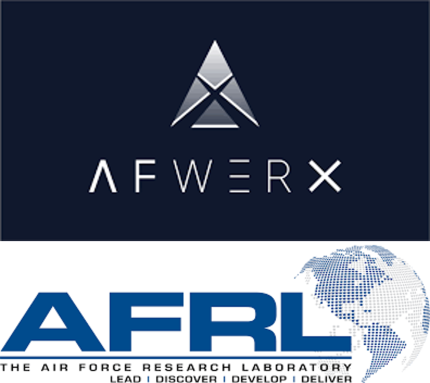

Ora Biomedical announced that it has been selected for a Small Business Innovation Research (SBIR) Phase I grant from the National Institutes of Health (NIH). The Technology Development Grant awarded through the National Institute on General Medical Sciences (NIGMS) will support development of EleGantry, an innovative software and hardware infrastructure designed to enhance rigor and reproducibility in invertebrate research, with a particular focus on longevity studies using Caenorhabditis elegans (C. elegans).
Read the article here.
Ora Biomedical has been selected by AFWERX, the innovation arm of the Department of the Air Force powered by the Air Force Research Laboratory (AFRL), for a Phase I SBIR grant to develop novel therapeutics to protect astronauts and high-altitude pilots from elevated space radiation based on its work identifying and developing age-targeting longevity interventions.
Read the article here.

Lifespan.io is a leading nonprofit advocacy foundation and online platform committed to advancing the science of aging and promoting healthy human lifespan. By supporting groundbreaking research projects, disseminating educational resources, and raising public awareness about the importance of longevity, Lifespan.io aims to accelerate the development of therapies that can improve the quality of life for people worldwide. With a focus on collaboration and innovation, Lifespan.io is driving the conversation on aging research and transforming the way we approach health and wellness throughout our lives. For more information, please visit Lifespan.io.
Seattle, WA – Ora Biomedical, Inc., is proud to announce an investment deal with Optispan Ventures that includes financing and research headquarters to build a high-throughput longevity drug discovery facility in the Pacific Northwest. Optispan Ventures is focused on healthspan innovations that will define 21st Century Medicine. “Interventions that target the biology of aging have the potential to dramatically improve quality of life by increasing healthspan – a healthy, disease-free lifespan is the goal. We are pleased to partner with Ora to apply their game-changing Wormbot-AI technology and go far beyond what has previously been possible in this field”, says Stuart McKee, CEO of Optispan.Optispan Ventures and Ora Biomedical have a shared vision of revolutionizing how we age” says Ora Biomedical CEO, Dr. Mitchell Lee. “Thanks to our partnership with Optispan, we can accelerate the launch of our longevity drug discovery factory and move one step closer to developing breakthrough healthy aging therapeutics for humans and all other animals we love.” For more information, see the full Press Release
Our latest publication, The million-molecule challenge: a moonshot project to rapidly advance longevity intervention discovery published in the top aging journal, GeroScience. To reveal the fullest potential of longevity medicine, the very best age-targeting interventions must be identified and developed. In this article, we propose the million-molecule challenge, an ambitious effort to screen one million interventions for increased lifespan and healthspan. With our proprietary WormBot-AI robotics + machine learning drug discovery platform, we can accomplish this goal within three years. Completing the million-molecule challenge will accelerate longevity medicine by decades in just a few short years.
Matt Kaeberlein discusses the future of aging, the Dog Aging Project, and Ora Biomedical’s army of drug discovery robots that will build the world’s largest longevity interventions database on Overheard at National Geographic. Listen to “What Science Tells Us About Living Longer” on Spotify.
Ora Biomedical Co-Founders Matt Kaeberlein (Ora Biomedical COB) and Jason Pitt (inventor of the WormBot robotics platform) have a new preprint out. Remarkable lifespan extension under intermittent hypoxia (IHT) Doubled lifespan under IHT and over 100 day old worms when combined with insulin signaling mutants. Read more here.
Ora Biomedical Co-Founder and Chair of the Board Matt Kaeberlein provides thought provoking insights into new studies that reveal how much aging biology has yet to be understood.